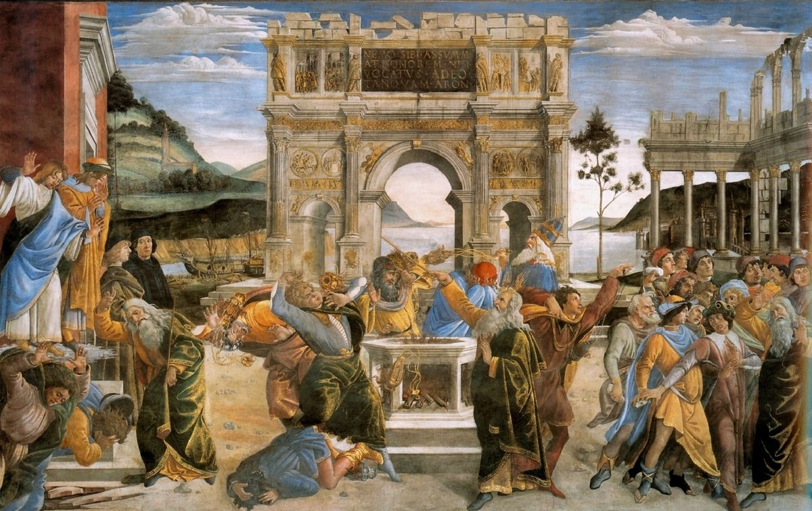

Numbers 16 — The Mister Translation

Painted on the wall of the Sistine Chapel for Pope Sixtus IV, and composed as three episodes read right to left: the crowd taking up stones, the censer test at the altar, and the ground opening. Aaron, calmly swinging his censer in the middle of it, is painted in a papal mitre. ⚠ The detail worth walking closer for is the arch — a reproduction of the Arch of Constantine in Rome, carrying an inscription that is not from Numbers at all: NEMO SIBI ASSVMAT HONOREM NISI VOCATVS A DEO TANQVAM ARON, ‘let no one take honour to himself unless he is called by God, as Aaron was’ — Hebrews 5:4 (not yet on these pages). A fresco about a challenge to priestly authority, in the pope’s own chapel, with the answer written across the middle of it in Latin. Whatever else this is, it is not a neutral illustration, and it is a great deal more interesting for not being one.
{kind=link}
Numbers 16:1 — ‘And Korah took’: a verb with nothing after it, and seven versions inventing seven different objects
The chapter opens on a broken sentence. Vayyiqqach Korach — ‘and Korah took’ — and then the Hebrew gives a genealogy, three more names, and a tribe, and never says what he took. The verb laqach is transitive; it wants an object; there isn't one. Everything after ‘took’ is a list of people who are grammatically alongside Korah, not things he picked up.
⚠ Every version on both shelves solves it, and no two solve it the same way. KJV and ASV supply an object outright — ‘took men’ (the KJV prints the added word in italics, which is that edition's honest way of admitting it isn't there); RV60 and the 1909 Reina-Valera do the same, ‘tomaron gente’. Geneva changes the verb instead: Korah ‘went apart with’ the others. NIV changes it further — Korah and the Reubenites ‘became insolent’ — and footnotes the difficulty. NWT 1984 reads ‘proceeded to get up’, TLB ‘conspired with’, and the Douay-Rheims drops the verb altogether and begins ‘And behold Core the son of Isaar…’. Seven solutions to one two-syllable word.
This translation leaves the hole where the Hebrew leaves it, marked the same way Genesis 4:8 is marked on these pages, where Cain says [something] to his brother and the text does not record what: ‘And Korah… took [something]’. A bracket is an honest report of a gap; a supplied word is a guess wearing the same clothes as the text.
The coalition is odder than the story usually gets credit for. Korah is a Levite — and not a distant one: Izhar was Kohath's son and Amram's brother, which makes Korah Moses' and Aaron's first cousin. His complaint is about priesthood. Dathan, Abiram and On are Reubenites, from the tribe of Jacob's displaced firstborn, and their complaint (vv12–14) never mentions priesthood at all — it is about land, leadership and a journey that has gone wrong. Two grievances, two tribes, one revolt; the chapter braids them and never harmonises them, which is one of the reasons it reads as two accounts laid over each other.
⚠ On son of Peleth is named here and never again. Verified against the whole Hebrew Bible: the phrase ben-Pelet occurs in exactly one verse, this one. He joins the rebellion in v1, is absent from every list of its members afterwards — vv5, 6, 16 and 24 name Korah, Dathan and Abiram and not him — and he is not among the dead. The text offers no explanation. Jewish tradition supplies a famous one (his wife talked him out of it), and it is worth saying plainly that the tradition is a story about the silence, not a reading of it.
Numbers 16:3, 7 — rav lakhem, ‘you have too much’: the two words Korah throws and Moses throws back
Korah's charge is two words long in Hebrew and it is not stupid. Rav lakhem — literally ‘much for you’, i.e. you have taken too much, you have gone far enough. And the premise he argues from is a quotation of the law: kol ha-edah kullam qedoshim, the whole congregation, all of them, are holy. That is Leviticus 19:2 on these pages almost word for word — ‘you shall be holy, for I, Jehovah your God, am holy’ — addressed there to exactly the same body. Korah is not denying revelation; he is deploying it.
⚠ Moses' reply hands the same two words straight back. Four verses later, at the end of the censer instructions: rav lakhem, benei Levi — you have too much, sons of Levi. The chapter never comments on the repetition, and most of the shelf preserves it: KJV, Geneva and ASV print ‘ye take too much upon you’ in both verses, NIV ‘you have gone too far’ in both, RV60 ‘¡Basta ya de vosotros!’ and ‘esto os baste’. ⚠ Two do lose it, and they are the same two: NWT 1984 keeps it (‘That is enough of YOU’ both times) while its 2013 revision splits into ‘We have had enough of you!’ and ‘You sons of Levi have gone far enough!’; TNM 1987 keeps it and the 2019 revision breaks it the same way. A boomerang only reads as a boomerang if it comes back in the same words.
And there is a second phrase doing the identical job. V9: ha-me'at mikkem — ‘is it a small thing for you’ that God separated you out and brought you near? Moses says it to Korah. Four verses later, at v13, Dathan and Abiram say ha-me'at back to Moses: is it a small thing that you brought us up out of Egypt to kill us here? Neither side invents an accusation; each returns the other's. The chapter is built out of sentences that get thrown twice.
The test Moses proposes is not a debate. Take censers, put fire and incense in them, stand before Jehovah, and let the choosing be done by the one who chooses. Machtah is rendered ‘censer’ here to match Leviticus 10:1, and the match is the point: that verse has Nadab and Abihu ‘each take his censer, put fire in it, and place incense on the fire’, and the verse after it has fire come out from before Jehovah and consume them. Every man who picks up a censer in v18 is repeating, word for word, an action the reader has already watched kill two priests. Moses does not mention it.
⚠ V11 carries one of the Masoretic ketiv/qere readings — written tillonu, read tallinu, both from lun, the grumbling-verb that has run through Numbers 14 and 11. The difference is a vowel and a voice, not a meaning; it is noted here because Numbers 14:36 carried one too, and the pair is a fair sample of how often the tradition marks a form it is not quite comfortable with.
Numbers 16:13 — ‘a land flowing with milk and honey’, said of EGYPT
This is the most quietly shocking sentence in the chapter and it is easy to read past. Eretz zavat chalav u-devash is the Torah's fixed formula for the promised land — it is what God calls Canaan at the burning bush, and what the scouts confirmed in Numbers 13:27. Dathan and Abiram use it, exactly, of the country they were slaves in. And they use it in a sentence accusing Moses of bringing them out of it ‘to kill us in the wilderness.’
Then v14 completes the inversion: you have not brought us into a land flowing with milk and honey. The same phrase, twice in two verses, first attached to Egypt and then withheld from Canaan. Whatever else this is, it is a precise reversal of the entire book's geography, and the text lets it stand without comment. Every version on both shelves keeps the formula in both verses; only TLB paraphrases it away, to ‘lovely Egypt’, and adds a word the Hebrew does not have — ‘is it a small thing,’ they mimicked — telling the reader how to hear a line the text leaves flat.
⚠ ‘Will you put out the eyes of these men?’ The idiom (tenaqqer, to bore or gouge out) is a real blinding-verb, and the sense is disputed: either ‘will you blind these men to what you are doing’ — a metaphor, which is how most read it — or a literal accusation that Moses would mutilate them. What is worth noticing on these pages is the word itself: eyes have just been the subject of the previous chapter, where a piece of blue thread was tied to a garment so that Israel would not go scouting after its own eyes. One chapter later, men who refuse to come when called ask whether Moses means to put their eyes out.
Moses' answer is a defence nobody asked for. ‘I have not taken one donkey from them, and I have not wronged one of them.’ He is answering a charge of self-enrichment that has not actually been made — and the sentence has a long afterlife: Samuel gives almost exactly this accounting when he lays down his office (1 Samuel 12:3, not yet on these pages), and so, in a different key, does Paul. It is the standard form for a leader inviting an audit. ⚠ Note also what Moses asks for: that God not turn toward their offering — which is the vocabulary of Genesis 4:4-5, where Jehovah turned toward Abel's offering and not toward Cain's. The chapter is about to borrow more from Genesis 4 than this.
Numbers 16:19 — Korah assembles an assembly, and the glory arrives for everybody
The root q-h-l runs through this chapter doing the work its noun does elsewhere. V3: they assembled (vayyiqqahalu) against Moses. V19: Korah assembled (vayyaqhel) the whole congregation against them — a causative, one man convening a nation. And v33, at the end: they perished from the midst of the assembly (ha-qahal). The word Korah used as his argument in v3 — the assembly of Jehovah, which he said Moses was lifting himself above — is the thing he is finally cut out of.
What v19 actually reports is that the demonstration worked. Korah gets his crowd; the whole congregation turns up. And then the glory of Jehovah appears — not to Moses, not to the disputants, but to the whole congregation. The text does not say what it looked like or that anyone was frightened. It simply notes that at the moment the vote would have gone Korah's way, the audience acquired a different witness.
⚠ Two hundred and fifty censers is not a detail, it is a body count in advance. The number is repeated at v2, v17 and v35, and by v18 every one of those men is standing at the entrance of the tent of meeting holding fire he has no authority to carry. Machtah appears six times in vv6–18; nothing else in the chapter is named that often. The reader who has been through Leviticus 10 knows how a scene with unauthorised incense in it ends before the chapter says so.
Numbers 16:22 — ‘shall one man sin, and will you be angry with the whole congregation?’
God's instruction in v21 is to stand clear so the congregation can be consumed ‘in a moment’ — the same offer, in the same shape, that Numbers 14:12 made and Exodus 32:10 made before it. Moses and Aaron fall on their faces and answer with a question about arithmetic: one man sins, and the anger falls on everyone?
⚠ It is worth being exact about what makes the question sharp, because it is not simply mercy. By this point in the chapter it is manifestly not one man. There are 250 chieftains holding censers, three named ringleaders, and in v19 a congregation Korah has successfully assembled. Moses' ‘one man’ is an argument, not a headcount — and the argument is granted: v24 does not consume the congregation, it moves it. The intercession works by getting the crowd relocated rather than by disputing the verdict.
The title they use for God occurs in exactly two verses in the Hebrew Bible, and both are in Numbers. El elohei ha-ruchot le-khol basar — God, God of the spirits of all flesh — here, and again at Numbers 27:16 (now on these pages), where Moses uses it to ask for a successor so that the congregation will not be ‘as sheep without a shepherd’. Both times it is spoken to argue that God's relation is to persons individually rather than to a crowd in the aggregate; it is a title chosen for the case being made. ⚠ The shelf divides on whether to keep it: KJV, ASV, Geneva, Douay-Rheims, RV60 and the 1909 Reina-Valera all print ‘the spirits of all flesh’; NIV interprets it as ‘the God who gives breath to all living things’, TLB flattens to ‘the God of all mankind’, NVI to ‘Dios de toda la humanidad’, and the NWT's 2013 revision to ‘the God of the spirit of all people’ — singular spirit, and people for flesh. The 1984 edition had kept both.
Numbers 16:30 — b'riah yivra: Moses asks God to CREATE, using the verb of Genesis 1
Moses stakes his commission on a falsifiable prediction, and states both halves of it. V29: if these men die an ordinary death, Jehovah has not sent me. V30: but if something else happens, you will know. It is the only place in the Torah where Moses proposes a test that could go against him, in public, with the result specified in advance.
⚠ And the something else is named with the creation verb. Im b'riah yivra Jehovah — ‘if Jehovah creates a creation’ — a cognate accusative built on bara, the verb of Genesis 1:1, which in the Hebrew Bible has God as its subject and no other. Moses is not asking for a miracle in the loose sense; he is asking for something to be made that was not there. The consonants of the noun b'riah turn up in only two other verses in the whole Hebrew Bible (Ezekiel 34:3 and Zechariah 11:16, neither yet on these pages) and in both of those they are a different word entirely, meaning a fat animal — so this is the one place the form carries the creation sense, and it carries it standing next to the verb itself.
Almost nobody prints it. KJV, Geneva and ASV read ‘make a new thing’; Douay-Rheims ‘do a new thing’; NIV ‘brings about something totally new’; TLB ‘does a miracle’; RV60 ‘hiciere algo nuevo’. ⚠ Two keep the doubled verb, and they are the same translation in two languages — NWT 1984 ‘if it is something created that Jehovah will create’ and TNM 1987 ‘si es algo creado que Jehová haya de crear’ — and both of their own later revisions drop it for ‘something extraordinary’ / ‘algo extraordinario’. That is the third time in this one chapter that the 1984/1987 editions have held a Hebrew figure their 2013/2019 successors let go.
Sheol is left as Sheol, as at Genesis 37:35. It is the place the dead go in Hebrew, not a place of punishment, and the difference matters here because these men go down there alive. ASV and NWT 1984 transliterate; KJV and Geneva read ‘the pit’; NIV ‘the realm of the dead’; ⚠ and the Douay-Rheims reads ‘hell’, following the Vulgate's infernum — a rendering with several centuries of consequences behind it, and one the Hebrew does not support.
Numbers 16:30-32 — the ground opens its mouth: a verb used three times in the Bible, and the first is Cain
⚠ This is the chapter's deepest root, and it is checkable in a line. The form patzetah — ‘she opened wide’, of a mouth — occurs in exactly three verses in the whole Hebrew Bible. Here at v30 and v32; at Deuteronomy 11:6 (not yet on these pages), which is this same event retold; and at Genesis 4:11, already on these pages, where Cain is cursed from the ground, which has opened its mouth to receive your brother's blood from your hand.
So the earth has opened its mouth twice in the narrative of the Hebrew Bible. The first time it was to take in the blood of a murdered brother, poured out on it. The second time it takes in living men, upright, with their households and their goods. The construction is identical — patzetah… et-piha, opened its mouth — and this translation prints it identically in both places so that the second one can be recognised. Nothing in Numbers 16 points back to Cain. The vocabulary does it without help.
And the swallowing verb has its own history on these pages. Bala, to swallow up, is the verb of Pharaoh's lean cows and of the fish that swallows Jonah; here it takes people who are still alive. The pairing with patzah is what makes the image physical rather than figurative: a mouth opens, and then it closes — v33, and the earth closed over them.
⚠ V32 says the earth swallowed ‘every human being who belonged to Korah’, and does not say it swallowed Korah. That is not a translation choice; the Hebrew is kol ha-adam asher le-Qorach, the men who were HIS. Read on and the problem sharpens: v35 has fire consume the 250 who were offering incense, and vv17–18 put Korah among the men holding censers. The chapter, read on its own, leaves its principal's death genuinely unstated — and the rest of the Bible does not settle it in one direction. Numbers 26:10 (now on these pages) says the earth swallowed them up together with Korah, and adds, in the next verse, that the sons of Korah did not die — which is why the Psalter has a collection of psalms attributed to them. Deuteronomy 11:6, retelling the same day, mentions Dathan and Abiram and does not mention Korah at all. Three witnesses, three different amounts of information. This project reports that rather than choosing, and the reader who has been told all their life that the earth swallowed Korah is entitled to know that the chapter it happened in does not say so.
Numbers 16:35 — where this chapter ends, and why your Bible has fifteen more verses
⚠ The Hebrew of Numbers 16 has thirty-five verses. Every English Bible on this shelf has fifty. This is not a manuscript difference and nothing is missing: the material English readers know as 16:36–50 — the censers of the dead men beaten into plating for the altar, the plague the next morning, Aaron running into the middle of the congregation with a censer and standing between the dead and the living — is Numbers 17:1–15 in the Masoretic text, and it is on these pages there. The chapter divisions in English Bibles descend from a 13th-century Latin system; the Hebrew paragraphing is older and divides the material differently. Since this translation follows the Masoretic Text, it follows the Masoretic chapter, and says so rather than silently importing fifteen verses.
The effect of the Hebrew division is that the chapter stops here, on fire coming out and consuming two hundred and fifty men, with no resolution, no atonement, and no memorial. An English reader reaches v50 and finishes on Aaron standing between the dead and the living and the plague stopped. A Hebrew reader finishes on the fire. It is a markedly darker chapter, and the darkness is a fact of the page-layout rather than of the text.
The last sentence is one the reader has already seen. Leviticus 10:2, on these pages: ‘and fire came out from before Jehovah, and consumed them, and they died before Jehovah.’ Here: ‘and fire came out from Jehovah, and consumed the two hundred and fifty men who were offering the incense.’ The two are not word-for-word — Leviticus has the fire come out from before Jehovah and Numbers simply from Jehovah — but the verb of consuming is the same and the situation is the same, and the second is unmistakably written in the shape of the first. Two priests at the start of the priesthood, and two hundred and fifty men who wanted to be priests, brought fire that was not asked for and were met by fire that was.
V34 is the human line in it. Everyone else runs — not from the fire, which has not fallen yet, but from the sound of the men going down — and what they say as they run is a sentence about themselves: lest the earth swallow us. It is the last thing said in the chapter by anyone other than the narrator.
Notes on this translation
Decisions. ⚠ The big one is the chapter's length. The Hebrew runs 1–35; every version on this shelf runs 1–50, because what they number 16:36–50 is Numbers 17:1–15 in the Masoretic text (now on these pages). Nothing is omitted here — it arrives with chapter 17. This translation follows the Hebrew division, which means the chapter ends on the fire rather than on Aaron stopping the plague. There are three Masoretic paragraph breaks, all setumot (after vv19, 22 and 35), and the one after v19 falls exactly where the glory appears and the argument stops being a debate. Five new dictionary entries in both languages: machtah the censer, patzah the three-verse mouth-opening verb, rav lakhem, and the pair this chapter turns on — qahal the assembly and edah the congregation. Two existing entries are extended, bala and bara. Two encyclopedia entries in both languages: Korah is extended from the stub Jude needed, and Dathan and Abiram is new. ⚠ The Korah entry previously stated flatly that the earth swallowed him; it now reports what each witness actually says, because Numbers 16 does not say it.
Echoes paid — four, and two were promised in writing. Exodus 6:21's note said Korah was ‘listed here in the priestly line and waiting for Numbers 16’: paid. Jude 1:11's note named the rebellion of Korah and pointed here: paid, and the bala dictionary entry's plain mention of 16:32 is now a link. The two nobody promised are the ones the Hebrew supplied on its own — patzetah, the ground opening its mouth, whose only other narrative occurrence is Genesis 4:11 and Abel's blood; and anshei shem, ‘men of renown’ (v2), which occurs in exactly two verses in the Hebrew Bible and whose other is Genesis 6:4, of the generation before the flood.
Patterns worth carrying forward. This chapter is built out of sentences said twice, in opposite directions. Rav lakhem — you have too much — goes from Korah to Moses (v3) and back from Moses to Korah (v7). Ha-me'at — is it a small thing — goes from Moses to Korah (v9) and back from Dathan and Abiram to Moses (v13). The formula for the promised land is turned around and pinned on Egypt (v13) and then withheld from Canaan (v14). Even the verdict is a mirror: Korah's argument in v3 is that Moses lifts himself above the assembly of Jehovah, and the assembly is what he is finally cut off from the midst of (v33). Nobody in this chapter introduces a new idea; they return each other's, harder.
Echoes planted. Numbers 17:1–15 (now on these pages), which is the second half of this story under another number — the censers hammered into altar-plating, and Aaron standing between the dead and the living; Numbers 26:9–11 (now on these pages), which says the earth took Korah and that his sons did not die; Deuteronomy 11:6 (not yet), which retells the day and leaves Korah out; Numbers 27:16 (now on these pages), the only other ‘God of the spirits of all flesh’; and 1 Samuel 12:3 (not yet), where Samuel lays down his office with Moses' own accounting — whose donkey have I taken?
⚠ A note on order: Numbers stands on these pages at chapters 1, 2, 3, 4, 5, 6, 7, 8, 9, 10, 11, 12, 13, 14, 15, 16, 17, 18, 19, 20, 21, 22, 23, 24, 25, 26, 27, 28, 29, 30, and now 31. Chapters 32–36 remain the open sequence.